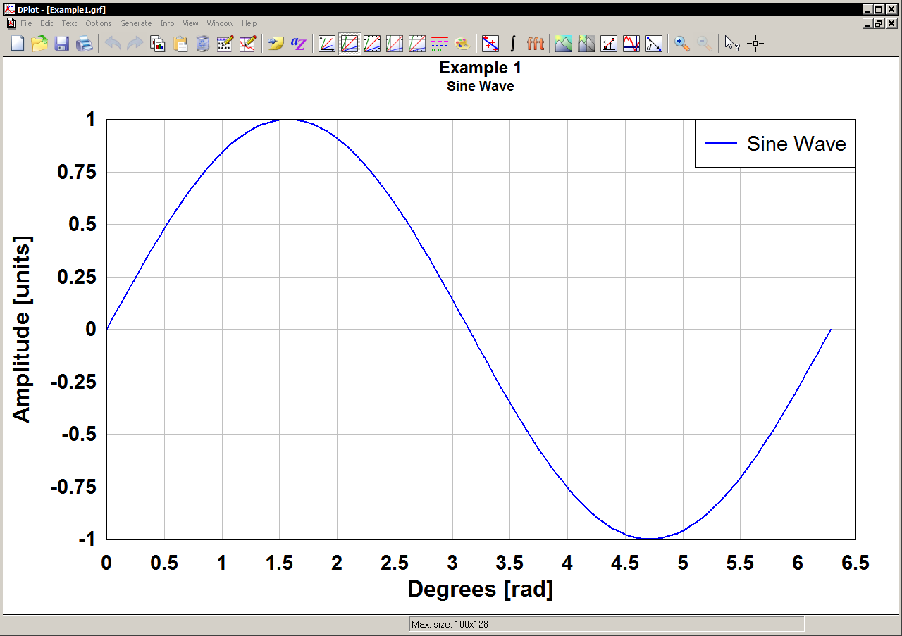
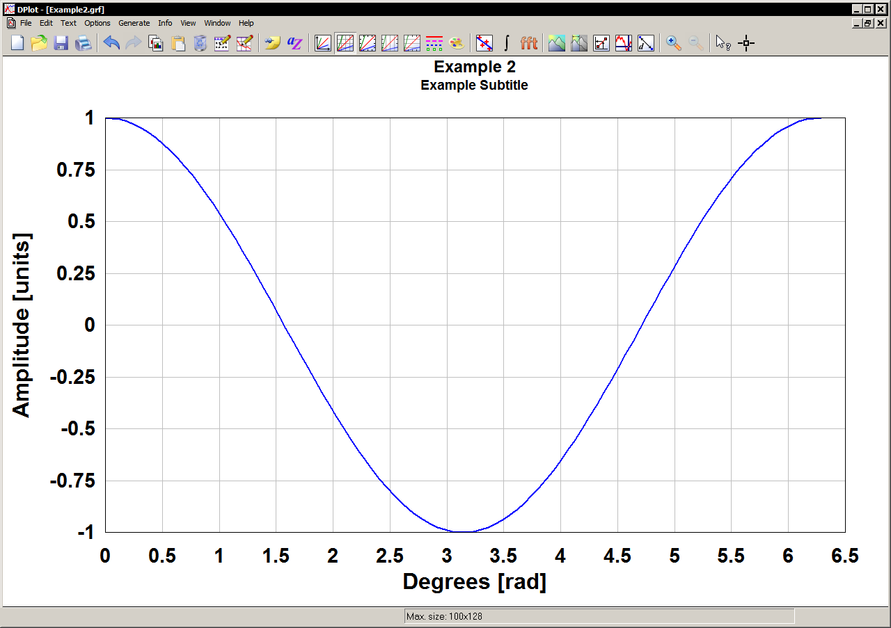
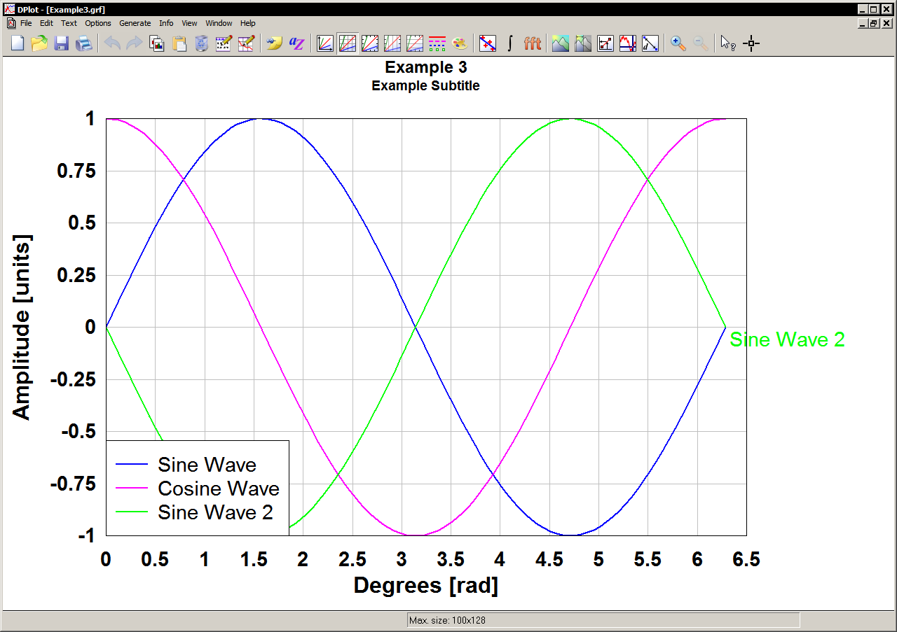

This is a Python package to write GRF files, a format readable by DPLOT - a visual graphing software developed by Hydesoft Computing. This package and its developers currently have no relationship with the DPLOT team or Hydesoft.
This package was developed after constant requests of my boss to input data into DPLOT for their use. Instead of processing in Python, exporting as a csv, and then importing into DPLOT, I developed this package to expedite the process.
The package runs on Python 3.7 and requires the CSV package as a dependency.
Create a curve:
import dplotpy as dp
import numpy as np
# Create some data
x = np.linspace(0, 2*np.pi, 100)
y_sin = np.sin(x)
# Create a Curve
sin_curve = dp.curve(x, y_sin)
# Add a title to curve
sin_curve.title = 'Sine Wave'
Create a XY Plot and with a curve:
sin_plot = dp.xyplot( sin_curve,
title='Example 1',
subtitle='Sine Wave',
xlabel='Degrees [rad]',
ylabel='Amplitude [units]')
# Save the file
sin_plot.save('Example1')

Create a new plot. Add curve to plot:
y_cos = np.cos(x)
cos_plot = dp.xyplot()
cos_plot.add_curve(cos_curve)
cos_plot.title = 'Example 2'
cos_plot.subtitle = 'Example Subtitle'
cos_plot.xlabel = 'Degrees [rad]'
cos_plot.ylabel = 'Amplitude [units]'
cos_plot.legend = False
cos_plot.save('Example2')

Add multiple curves to a plot:
all_plot = dp.xyplot(sin_curve)
all_plot.add_curve(cos_curve)
all_plot.add_curve(sin2_curve)
all_plot.title = 'Example 3'
all_plot.subtitle = 'Example Subtitle'
all_plot.xlabel = 'Degrees [rad]'
all_plot.ylabel = 'Amplitude [units]'
all_plot.legend = [0,1]
all_plot.legendalight = [0,2]
all_plot.save('Example3')
